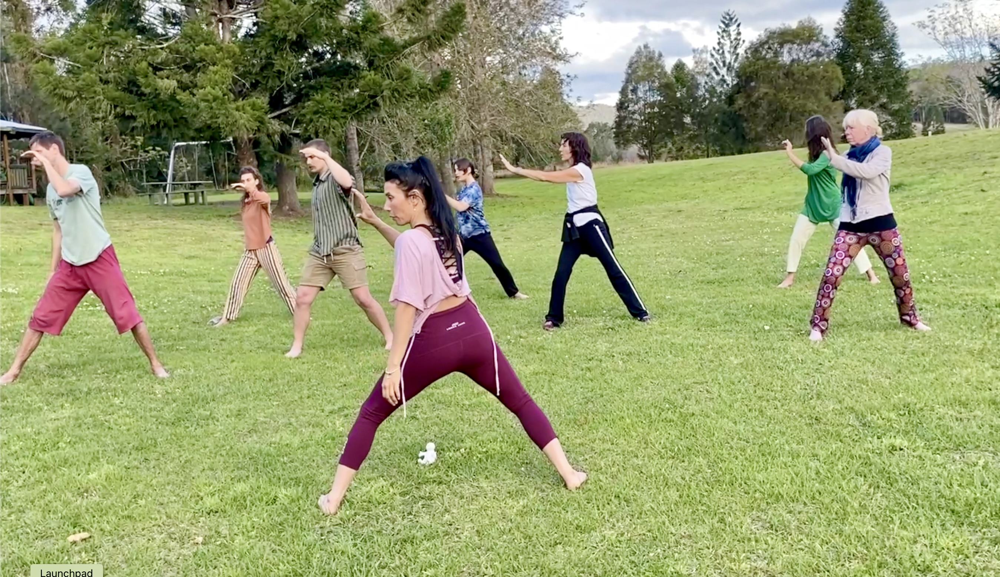

A low impact seated dance exercise program for senior citizens. Enjoyable, uplifting and informative — set to a combination of great relatable tunes!

This program is suitable for people living with movement restrictions, physical limitations, or anyone wanting an interactive, low impact workout. Classes are designed for individuals seeking an activity for the body and brain through a fun, physical and creative outlet.
Classes are run as a seated program with the option to do parts standing. The focus is on improving mobility, coordination and balance in a safe and fun environment.
Contact Lisa to find out about upcoming Elevate sessions in your area.
Get in Touch